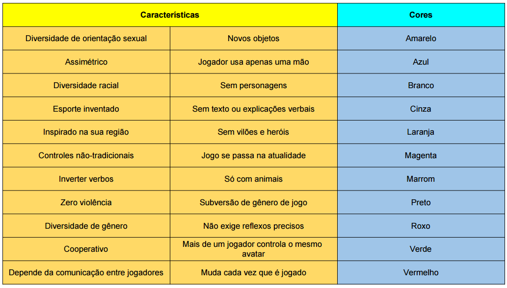

Introdução ao game design digital
Discussão
O que muda do design de jogo analógico para o digital?
Quais são os principais potenciais do computador como suporte?
Em quais contextos jogamos videogames?
Quais são as expectativas em torno de um jogo digital?

Exercício de geração de ideias
A partir das características e cores listadas abaixo, vamos tentar criar ideias de jogo rapidamente.

Se quiser imprimir a ficha para ideação de game design macro para usar em casa, o link está aqui.